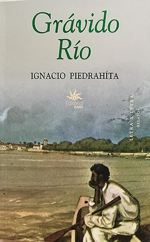

Grávido río
Reseña por Jorge I. Zuluaga

Ver reseña en GoodReads (necesita cuenta)
La prosa de Ignacio es limpia y casi musical, pero al mismo tiempo precisa y científica (no esperaría menos de una persona con una formación como la suya).
Es lo primero que leo de Ignacio, pero me ha producido gran admiración que en un científico como él (geólogo) se conjugue también la sensibilidad estética y la capacidad de escribir demostrada en esta crónica, mitad literatura, mitad ciencia. Naturalmente no es el primer científico escritor, ni será el único, pero siendo yo mismo un científico y escritor frustrado, admiro profundamente a quienes tienen ese don.
Se sorprenderán de saber que entre las historias de caminos empedrados, guayabas amargas, canoas y culebras, en este librito encontrarán también una descripción de la estructura y origen de los anillos de Saturno, revelaciones y reflexiones sobre el verdadero significado de las ideas filosóficas de los pensadores jónicos, interesantes estadísticas sobre las muertes producidas por erupciones volcánicas en el último siglo en todo el planeta y hasta el origen de los fósiles encontrados en algunas de las zonas secas del país.
Esto es precisamente lo que más me ha gustado del libro. No se trata simplemente de una descripción literaria y muy bella de un viaje personal por el río Magdalena, sino también de una concatenación de muchas de las ideas que van llegando a la cabeza de este científico escritor a medida que vive sus experiencias en el viaje.
Sus breves citas a la literatura, la ciencia y la historia son geniales, así como algunas de sus profundas reflexiones sobre la vida, la geología de Colombia y la situación social del país.
Conocí este libro a través de un artículo en el periódico "Universo Centro" (Medellín, Colombia) en el que reproducían una parte de uno de sus capítulos. Si bien nos pareció hermoso (mi esposa fue quien me llamó la atención sobre el escrito), no me imaginaba lo que encontraría en el resto del libro (¡Gracias a Mery Gaviria por regalármelo! No hay mejor regalo para dar y recibir que un libro). Fue una grata sorpresa saber que el resto era incluso mejor.
Otra cosa que disfruté fue la espontaneidad de la "crónica" (la llamo así, aunque no sé si técnicamente se cataloga como tal) que demuestra la autenticidad del autor y de sus ideas.
La manera como empieza el viaje, con una "corazonada" más que un proceso de preparación elaborado y artificioso. El hecho de que la mayor parte del viaje se realice por carreteras modernas y en un vehículo convencional, en lugar de hacerlo de forma más prosaica, a pie, en bicicleta e incluso en bus. La casualidad en todos sus encuentros, que no revela un sino divino sino el hecho de que para la gente sensible cualquier experiencia puede ser la fuente de historias increíbles. Y no menos importante, el final súbito de la crónica, incluso antes de llegar a la desembocadura del río (disculpen el "spoiler"), que en lugar de ser descrito como producto del cansancio y el calor sofocante del delta interior, se presenta de manera muy poética (pero no afectada) como el momento en el que el escritor se ha rebosado de experiencias y necesita ser vaciado a través de un libro, este libro.
En fin, me encantó.
Buscaré otros escritos de Ignacio y espero leer en el futuro cualquier otra de sus crónicas de viaje. Ustedes también deberían hacerlo.